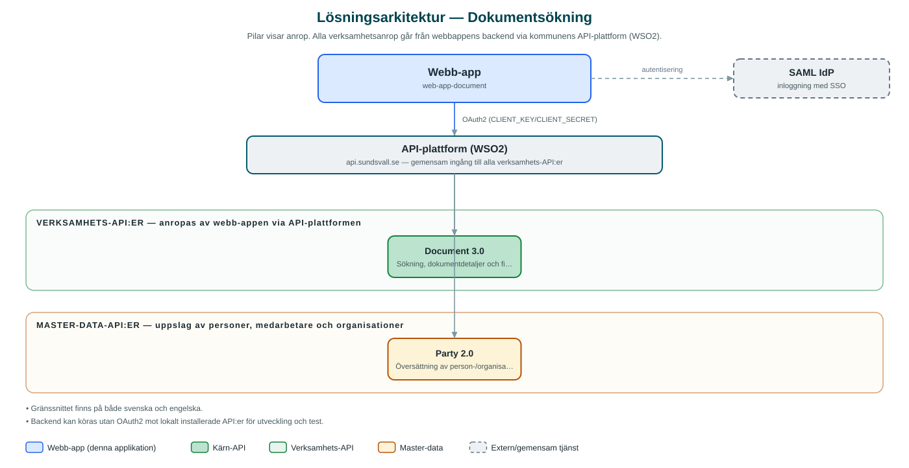

Dokumentsökning
Intern söktjänst där behöriga medarbetare söker fram kommunens lagrade dokument som refererar till en person eller organisation.
Om applikationen
Tjänsten låter behöriga medarbetare söka efter dokument i kommunens centrala dokumentlager utifrån person- eller organisationsnummer. Sökningen kan även omfatta sekretessbelagda dokument när användaren har behörighet, och görs per kommun.
Träfflistan visar dokumentnummer, beskrivning, känslighet (publikt eller konfidentiellt) och när dokumentet skapades. För varje dokument kan detaljerad information visas, med revisioner, lagrum, arkiveringsstatus, metadata och ingående filer som kan laddas ner.
Det här stödjer applikationen
- Sök på person eller organisation – Sökning via person- eller organisationsnummer som översätts till en intern part-identitet.
- Sekretesshantering – Möjlighet att inkludera sekretessbelagda dokument i sökningen, med tydlig märkning av konfidentiella dokument.
- Dokumentdetaljer – Detaljvy med revisioner, beskrivning, lagrum, arkivering och metadata.
- Filnedladdning – Ingående filer i ett dokument kan hämtas direkt från tjänsten.
- Kommunval – Sökningen görs per vald kommun.
Teknisk dokumentation
Nedan beskrivs hur applikationen är uppbyggd, vilka API:er den använder och vad som krävs för att driftsätta den. Informationen är härledd ur källkoden och dess konfiguration på GitHub.
Arkitektur

Applikationen består av en webbaserad frontend (Next.js (pages router), React, TypeScript, sk-web-gui, Tailwind CSS, next-i18next, Zustand) och en backend (Node.js, Express, routing-controllers, Passport SAML, Prisma) som utvecklas i samma kodbas. Verksamhetsanrop går via kommunens gemensamma API-plattform (WSO2) – frontend pratar aldrig direkt med underliggande system. Inloggning: SAML (SSO). Övriga integrationer som förekommer i koden: SAML IdP, WSO2 API-gateway.
Teknikstack
- Frontend: Next.js (pages router), React, TypeScript, sk-web-gui, Tailwind CSS, next-i18next, Zustand
- Backend: Node.js, Express, routing-controllers, Passport SAML, Prisma
API-beroenden
Applikationen konsumerar följande API:er via kommunens API-plattform. Versionerna är hämtade ur källkodens API-konfiguration.
| API | Version | Användning |
|---|---|---|
| Document | 3.0 | Sökning, dokumentdetaljer och filnedladdning |
| Party | 2.0 | Översättning av person-/organisationsnummer till part-ID |
Konfiguration och driftsättning
- .env-filer för frontend och backend utifrån .env-exempel
- CLIENT_KEY/CLIENT_SECRET mot kommunens API-gateway
- SAML-certifikat, nycklar och callback-URL:er
- Möjlighet att peka direkt mot lokala Document-/Party-API:er via DISABLE_OAUTH2, DOCUMENT_API_BASE_URL och PARTY_API_BASE_URL vid utveckling
Noterbart ur källkoden
- Gränssnittet finns på både svenska och engelska.
- Backend kan köras utan OAuth2 mot lokalt installerade API:er för utveckling och test.
Källkod
Källkoden är öppen och finns hos Sundsvalls kommun på GitHub. I källkodsförrådet finns även instruktioner för att klona, konfigurera och starta applikationen i egen miljö.